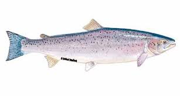
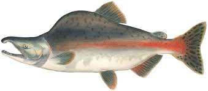
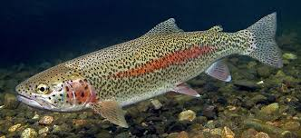

Currently Available
- Atlantic Salmon
- Coho Salmon
- Chinook Salmon
- Sockeye Salmon
- Pink Salmon
- Rainbow Trout
Conservation
At Hungry Bear Fisheries, we offer a variety of the finest fish, including Atlantic Salmon, Coho Salmon, Sockeye Salmon, and more. Each fish is sourced with care to ensure freshness and quality that you can taste in every bite.
We believe in responsible fishing practices to preserve marine life for generations to come. Our commitment to sustainable sourcing means you can enjoy delicious fish while supporting a healthy ecosystem.
Our team is dedicated to providing a seamless experience from catch to delivery. Whether you’re a home cook or a professional chef, we’re here to help you find the perfect fish for your next meal.
About Us
We’re passionate about delivering the freshest fish straight from pristine waters to your table!